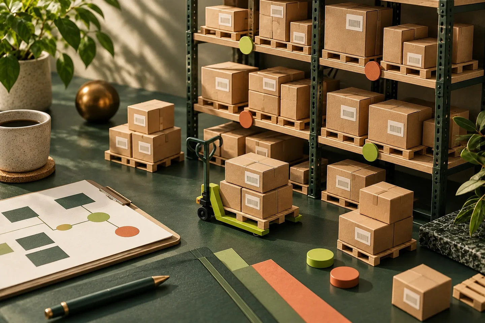
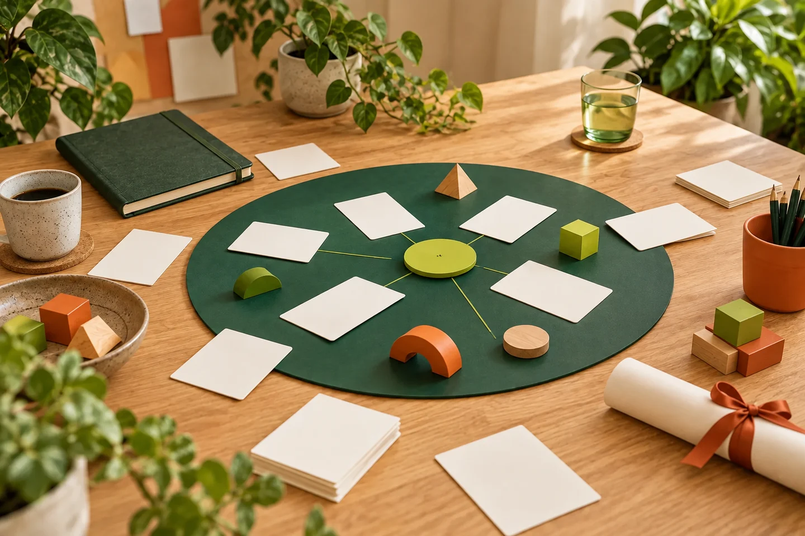
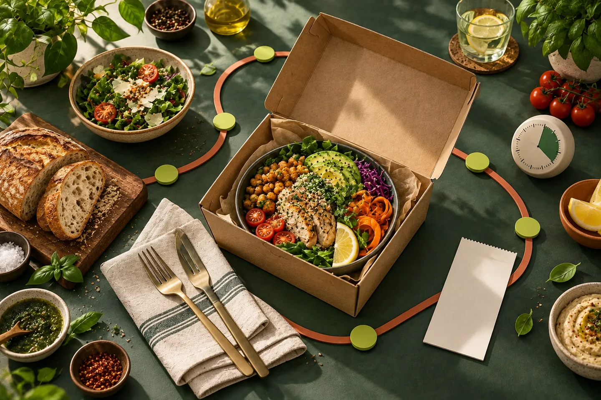
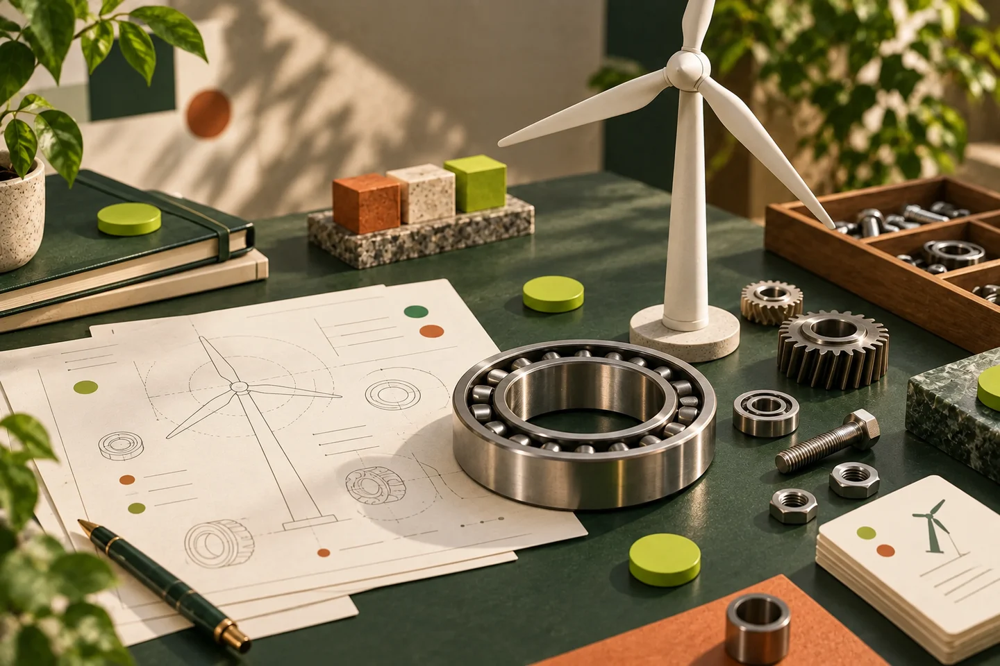

Scrivo soluzioni che mettono ordine tra processi, persone e tecnologia.
Trasformo bisogni complessi in software semplici da usare, mantenere e migliorare.
Sono Matteo, programmatore full-stack con esperienza su gestionali, siti web, e-commerce e sistemi di integrazione. Posso lavorare sia sul back-end che sul front-end. Prediligo un approccio pragmatico di fronte alle sfide: capire bene il problema, dare una struttura alle informazioni raccolte e scrivere una soluzione efficace.
Negli anni ho lavorato su contesti molto diversi, dal turismo alla formazione, dalle operations al controllo economico. Ho imparato che la qualità del software nasce tanto dal codice quanto dall'ascolto.
Prima ti mostro il modo in cui lavoro, poi gli strumenti con cui lo faccio. Perché una soluzione tecnicamente perfetta ma incomprensibile resta comunque un problema ben compilato.
100/100
100/100
100/100
95/100
90/100
90/100
Una selezione del mio percorso
Metto in evidenza ciò che ho contribuito a costruire, preservando la privacy dei clienti.
Piattaforma per scoprire, fruire e personalizzare viaggi esperienziali.
Il mio contributoSEO, analytics ed eventi, pannello back-office, scrittura del front-end.
Gestionale operativo per prenotazioni, preventivi, planner, listini e canali turistici.
Il mio contributoIntegrazioni multi-canale (WEB, GetYourGuide, Viator, TourCMS), sincronizzazione listini, pannello back-office, flussi di prenotazione e scrittura del front-end.

Gestione vendite, magazzini, promozioni, resi, note di credito.
Il mio contributoPannello back-office e scrittura delle API per interfacciare il front-end.
Middleware per aggiornamento massivo di più siti e-commerce (PrestaShop, Shopify e WooCommerce).
Il mio contributoLettura dati dei prodotti da più sorgenti e scrittura/sincronizzazione degli stessi tra i diversi e-commerce in maniera massiva e automatizzata.
Controllo di gestione per costi, ricavi, fatture, dipendenti e analisi periodiche per le strutture alberghiere.
Il mio contributoPannello back-office, scrittura del back-end, importazioni dati, analisi e reportistiche
Gestione di soci, investimenti, progetti, interessi e rimborsi progressivi.
Il mio contributoCalcoli economici e arrotondamenti, interessi pagati, storico, rimborsi progressivi e comunicazioni ai soci.

Ambiente digitale per corsi, quiz, attività, certificazioni e percorsi professionali.
Il mio contributoLogiche di fruizione ECM, report multi-questionario, generazione attestati, export e gestione fine corso. Scrittura del back-end e front-end.
Gestionale per mezzi, autisti NCC, servizi, assegnazioni e documentazione operativa.
Il mio contributoGestione fatture, autisti, calendari, mezzi, costi, ricavi, API per interfacciare il front-end. Scrittura del back-office.

Ordini online con prodotti, varianti, coupon, pagamenti, ritiro e consegna.
Il mio contributoAssegnazione rider, controllo sovrapposizioni e slot, sconti, API e documenti ordine.
Gestione di commesse, edifici, contatori, utenze, documenti e comunicazioni.
Il mio contributoGestione commesse con interventi ordinari e straordinari, chat, filtri territoriali, grafici, export e import fatture con aggiornamento crediti.
Catalogo specialistico di minerali, classi, documenti e collezioni personali.
Il mio contributoPannello back-office, upload documentale, stampe PDF e consolidamento delle impostazioni. Networking tra collezionisti.

Vendita e scambio di pezzi di ricambio per impianti eolici.
Il mio contributoPannello back-office, inserimento prodotti, incontro digitale tra acquirenti e venditori.
Curriculum professionale
Il mio percorso ruota attorno allo sviluppo di software su misura: gestionali, siti web, e-commerce, API e integrazioni. Non solo scrivere codice, ma capire perché serve e a chi deve semplificare la giornata.
Sviluppo ed evoluzione di piattaforme complesse, dal modello dati all'interfaccia, con particolare attenzione alla solidità del backend.
Traduzione di flussi operativi, commerciali e amministrativi in strumenti digitali chiari, misurabili e mantenibili.
Confronto con gli stakeholder, sviluppo incrementale, debugging e manutenzione.
Download CV
Entriamo in contatto
Dimmi cosa vuoi costruire, migliorare o semplicemente capire meglio.